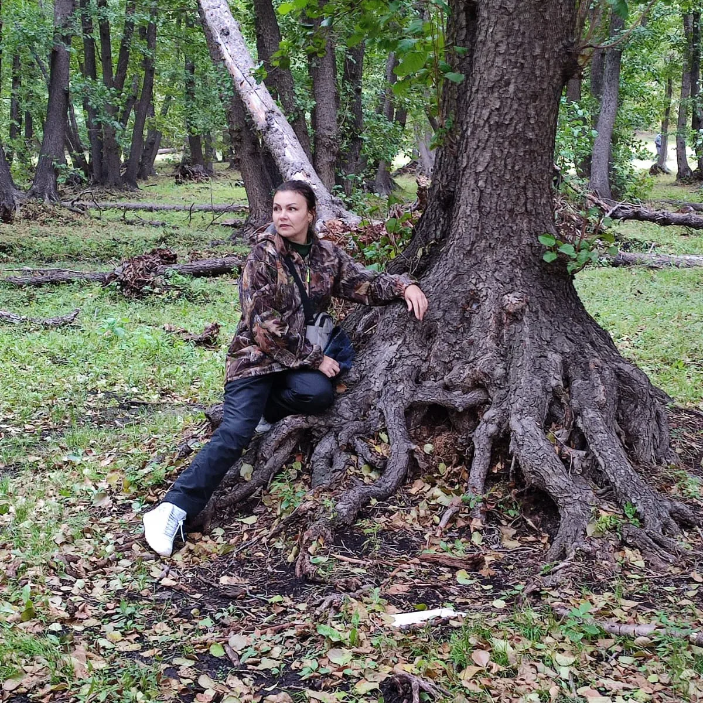

Баянау́льский госуда́рственный национа́льный приро́дный парк — национальный парк в Казахстане
Входит в число особо охраняемых природных территорий Казахстана.
В парке насчитывается до 50 видов реликтовых растений, включая реликтовую чёрную ольху
и реликтовую каменную смородину
Ольха растет корнями вверх.
Фото радонового озера

Роща черной ольхи со мной